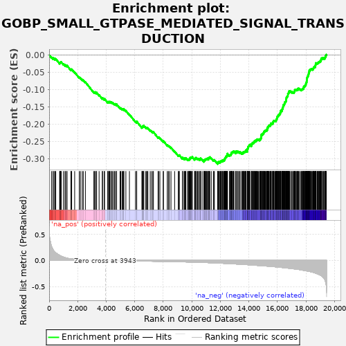
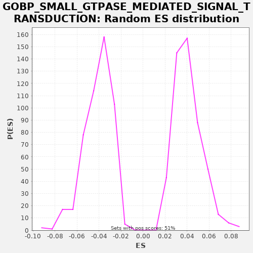

| | | Dataset | X_enriched_genes copy |
| Phenotype | NoPhenotypeAvailable |
| Upregulated in class | na_neg |
| GeneSet | GOBP_SMALL_GTPASE_MEDIATED_SIGNAL_TRANSDUCTION |
| Enrichment Score (ES) | -0.3155412 |
| Normalized Enrichment Score (NES) | -7.699685 |
| Nominal p-value | 0.0 |
| FDR q-value | 0.0 |
| FWER p-Value | 0.0 |
Table: GSEA Results Summary

Fig 1: Enrichment plot: GOBP_SMALL_GTPASE_MEDIATED_SIGNAL_TRANSDUCTION
Profile of the Running ES Score & Positions of GeneSet Members on the Rank Ordered List
| SYMBOL | RANK IN GENE LIST | RANK METRIC SCORE | RUNNING ES | CORE ENRICHMENT | | 1 | STMN1 | 165 | 0.273 | -0.0065 | No |
| 2 | FLOT1 | 271 | 0.208 | -0.0099 | No |
| 3 | PARK7 | 287 | 0.202 | -0.0085 | No |
| 4 | RRAS | 395 | 0.159 | -0.0120 | No |
| 5 | ARL3 | 399 | 0.159 | -0.0100 | No |
| 6 | CFL1 | 465 | 0.144 | -0.0112 | No |
| 7 | RAB4B | 737 | 0.096 | -0.0233 | No |
| 8 | RFXANK | 751 | 0.095 | -0.0218 | No |
| 9 | RHOA | 794 | 0.088 | -0.0219 | No |
| 10 | CDKN2A | 810 | 0.086 | -0.0205 | No |
| 11 | DOK1 | 850 | 0.080 | -0.0204 | No |
| 12 | RANGRF | 1000 | 0.064 | -0.0260 | No |
| 13 | TGFB2 | 1118 | 0.054 | -0.0300 | No |
| 14 | RALA | 1127 | 0.052 | -0.0283 | No |
| 15 | SIPA1 | 1224 | 0.045 | -0.0312 | No |
| 16 | RAC3 | 1255 | 0.043 | -0.0306 | No |
| 17 | RHEBL1 | 1528 | 0.030 | -0.0427 | No |
| 18 | TIMP2 | 1545 | 0.029 | -0.0414 | No |
| 19 | RTN4R | 1580 | 0.028 | -0.0410 | No |
| 20 | ARHGDIG | 1790 | 0.022 | -0.0499 | No |
| 21 | NUCB2 | 2112 | 0.016 | -0.0646 | No |
| 22 | ARHGAP40 | 2195 | 0.015 | -0.0667 | No |
| 23 | RHOU | 2322 | 0.014 | -0.0712 | No |
| 24 | RASGRP4 | 2393 | 0.013 | -0.0727 | No |
| 25 | LZTR1 | 2541 | 0.011 | -0.0783 | No |
| 26 | RASA4 | 3135 | 0.005 | -0.1074 | No |
| 27 | GARNL3 | 3200 | 0.005 | -0.1086 | No |
| 28 | SPRY3 | 3213 | 0.005 | -0.1070 | No |
| 29 | RAB42 | 3304 | 0.004 | -0.1096 | No |
| 30 | RASGRF1 | 3329 | 0.004 | -0.1087 | No |
| 31 | RAPGEFL1 | 3503 | 0.003 | -0.1156 | No |
| 32 | RAB9B | 3730 | 0.001 | -0.1254 | No |
| 33 | KSR1 | 3742 | 0.001 | -0.1238 | No |
| 34 | DEPDC7 | 3867 | 0.001 | -0.1281 | No |
| 35 | GPR4 | 3883 | 0.000 | -0.1267 | No |
| 36 | RGL2 | 4108 | -0.001 | -0.1364 | No |
| 37 | F2RL3 | 4124 | -0.001 | -0.1350 | No |
| 38 | MAPKAPK5 | 4192 | -0.001 | -0.1363 | No |
| 39 | LRRD1 | 4226 | -0.002 | -0.1359 | No |
| 40 | ARHGAP4 | 4246 | -0.002 | -0.1347 | No |
| 41 | EPOR | 4328 | -0.002 | -0.1368 | No |
| 42 | RASGRP1 | 4356 | -0.002 | -0.1361 | No |
| 43 | ARAP3 | 4425 | -0.003 | -0.1375 | No |
| 44 | GPR35 | 4505 | -0.003 | -0.1395 | No |
| 45 | MAPK11 | 4597 | -0.004 | -0.1421 | No |
| 46 | RASL10A | 4624 | -0.004 | -0.1413 | No |
| 47 | GPR65 | 4719 | -0.004 | -0.1441 | No |
| 48 | ARHGEF25 | 4732 | -0.004 | -0.1426 | No |
| 49 | SRC | 4972 | -0.005 | -0.1530 | No |
| 50 | TAX1BP3 | 5022 | -0.006 | -0.1534 | No |
| 51 | F2RL1 | 5111 | -0.006 | -0.1559 | No |
| 52 | CDC42EP5 | 5171 | -0.006 | -0.1568 | No |
| 53 | CDC42EP2 | 5230 | -0.007 | -0.1577 | No |
| 54 | MYOC | 5233 | -0.007 | -0.1556 | No |
| 55 | WAS | 5380 | -0.007 | -0.1611 | No |
| 56 | A2M | 5629 | -0.009 | -0.1720 | No |
| 57 | LPAR4 | 6053 | -0.010 | -0.1921 | No |
| 58 | EPS8L1 | 6131 | -0.011 | -0.1940 | No |
| 59 | RASGRP2 | 6141 | -0.011 | -0.1923 | No |
| 60 | RGS19 | 6503 | -0.012 | -0.2091 | No |
| 61 | RALGDS | 6536 | -0.012 | -0.2087 | No |
| 62 | LAT | 6551 | -0.012 | -0.2072 | No |
| 63 | RASGRP3 | 6556 | -0.012 | -0.2053 | No |
| 64 | RHOF | 6610 | -0.013 | -0.2059 | No |
| 65 | ABRA | 6626 | -0.013 | -0.2045 | No |
| 66 | RASAL1 | 6748 | -0.013 | -0.2087 | No |
| 67 | GPR18 | 6830 | -0.014 | -0.2108 | No |
| 68 | FBP1 | 6870 | -0.014 | -0.2107 | No |
| 69 | RIPOR2 | 6925 | -0.014 | -0.2114 | No |
| 70 | DOCK2 | 7086 | -0.015 | -0.2176 | No |
| 71 | VAV1 | 7186 | -0.015 | -0.2207 | No |
| 72 | RHOBTB1 | 7273 | -0.016 | -0.2230 | No |
| 73 | RHOH | 7311 | -0.016 | -0.2228 | No |
| 74 | SH3BP1 | 7636 | -0.017 | -0.2377 | No |
| 75 | ARHGEF28 | 7676 | -0.017 | -0.2376 | No |
| 76 | GPR55 | 7765 | -0.018 | -0.2400 | No |
| 77 | RASAL3 | 7998 | -0.019 | -0.2501 | No |
| 78 | RELN | 8013 | -0.019 | -0.2487 | No |
| 79 | ARHGAP9 | 8282 | -0.021 | -0.2606 | No |
| 80 | NUP62 | 8356 | -0.021 | -0.2623 | No |
| 81 | PSD2 | 8429 | -0.021 | -0.2639 | No |
| 82 | PIK3CG | 8543 | -0.022 | -0.2677 | No |
| 83 | PIK3R2 | 8798 | -0.023 | -0.2789 | No |
| 84 | FGF10 | 9055 | -0.025 | -0.2902 | No |
| 85 | ARHGAP25 | 9105 | -0.026 | -0.2906 | No |
| 86 | SYNPO2L | 9127 | -0.026 | -0.2895 | No |
| 87 | CDC42 | 9343 | -0.027 | -0.2987 | No |
| 88 | RHOG | 9348 | -0.027 | -0.2967 | No |
| 89 | ARHGAP22 | 9458 | -0.028 | -0.3003 | No |
| 90 | ARHGEF6 | 9471 | -0.028 | -0.2988 | No |
| 91 | DOCK8 | 9539 | -0.029 | -0.3001 | No |
| 92 | DENND3 | 9543 | -0.029 | -0.2981 | No |
| 93 | ARHGEF9 | 9578 | -0.029 | -0.2977 | No |
| 94 | ARHGAP8 | 9695 | -0.030 | -0.3017 | No |
| 95 | MRAS | 9759 | -0.030 | -0.3028 | No |
| 96 | RAPGEF3 | 9776 | -0.030 | -0.3015 | No |
| 97 | ARHGAP36 | 9830 | -0.031 | -0.3021 | No |
| 98 | ARHGEF26 | 9841 | -0.031 | -0.3005 | No |
| 99 | GRAP | 9876 | -0.031 | -0.3001 | No |
| 100 | DOCK6 | 9877 | -0.031 | -0.2979 | No |
| 101 | ARRB1 | 9901 | -0.031 | -0.2970 | No |
| 102 | SYNGAP1 | 9923 | -0.031 | -0.2959 | No |
| 103 | CELSR1 | 9979 | -0.032 | -0.2966 | No |
| 104 | LPAR6 | 10026 | -0.032 | -0.2969 | No |
| 105 | RAB33A | 10031 | -0.032 | -0.2949 | No |
| 106 | IQSEC3 | 10196 | -0.034 | -0.3014 | No |
| 107 | NGFR | 10221 | -0.034 | -0.3005 | No |
| 108 | PLD2 | 10234 | -0.034 | -0.2990 | No |
| 109 | RASGRF2 | 10274 | -0.034 | -0.2988 | No |
| 110 | RAC2 | 10283 | -0.035 | -0.2971 | No |
| 111 | CYTH4 | 10373 | -0.035 | -0.2996 | No |
| 112 | NOTCH1 | 10418 | -0.036 | -0.2998 | No |
| 113 | AIF1 | 10460 | -0.036 | -0.2997 | No |
| 114 | TIAM2 | 10543 | -0.037 | -0.3019 | No |
| 115 | TAGAP | 10589 | -0.037 | -0.3021 | No |
| 116 | DOK2 | 10609 | -0.037 | -0.3009 | No |
| 117 | IQSEC2 | 10612 | -0.037 | -0.2989 | No |
| 118 | PLCE1 | 10727 | -0.039 | -0.3027 | No |
| 119 | ARHGAP42 | 10855 | -0.040 | -0.3072 | No |
| 120 | ARHGEF19 | 10858 | -0.040 | -0.3051 | No |
| 121 | ARHGAP30 | 10890 | -0.040 | -0.3046 | No |
| 122 | DAB1 | 10894 | -0.040 | -0.3026 | No |
| 123 | FGD4 | 10926 | -0.040 | -0.3021 | No |
| 124 | RTKN | 10971 | -0.041 | -0.3022 | No |
| 125 | RND2 | 10985 | -0.041 | -0.3007 | No |
| 126 | RRAD | 11017 | -0.041 | -0.3002 | No |
| 127 | CNKSR1 | 11061 | -0.042 | -0.3003 | No |
| 128 | APOE | 11084 | -0.042 | -0.2993 | No |
| 129 | ARHGAP45 | 11162 | -0.043 | -0.3012 | No |
| 130 | GDI2 | 11171 | -0.043 | -0.2994 | No |
| 131 | GPR20 | 11180 | -0.043 | -0.2977 | No |
| 132 | APOA1 | 11217 | -0.043 | -0.2974 | No |
| 133 | KCTD13 | 11238 | -0.043 | -0.2963 | No |
| 134 | RAB12 | 11260 | -0.043 | -0.2952 | No |
| 135 | DENND4B | 11366 | -0.045 | -0.2986 | No |
| 136 | RHOD | 11515 | -0.046 | -0.3042 | No |
| 137 | IGF1 | 11547 | -0.047 | -0.3037 | No |
| 138 | ARHGAP31 | 11585 | -0.047 | -0.3034 | No |
| 139 | NUCB1 | 11816 | -0.050 | -0.3134 | Yes |
| 140 | SGSM3 | 11819 | -0.050 | -0.3113 | Yes |
| 141 | RAB4A | 11843 | -0.051 | -0.3103 | Yes |
| 142 | RIN2 | 11864 | -0.051 | -0.3092 | Yes |
| 143 | PDPN | 11933 | -0.052 | -0.3106 | Yes |
| 144 | DOCK10 | 11934 | -0.052 | -0.3085 | Yes |
| 145 | RIPOR1 | 11995 | -0.052 | -0.3095 | Yes |
| 146 | CHML | 12021 | -0.053 | -0.3086 | Yes |
| 147 | ITPKB | 12051 | -0.053 | -0.3080 | Yes |
| 148 | RHOQ | 12058 | -0.053 | -0.3061 | Yes |
| 149 | RABL3 | 12086 | -0.054 | -0.3054 | Yes |
| 150 | RHOV | 12156 | -0.055 | -0.3068 | Yes |
| 151 | BCL6 | 12165 | -0.055 | -0.3051 | Yes |
| 152 | STARD13 | 12180 | -0.055 | -0.3037 | Yes |
| 153 | SRGAP3 | 12244 | -0.056 | -0.3048 | Yes |
| 154 | PSD | 12274 | -0.056 | -0.3042 | Yes |
| 155 | F2RL2 | 12295 | -0.057 | -0.3030 | Yes |
| 156 | CAVIN4 | 12307 | -0.057 | -0.3015 | Yes |
| 157 | RGL3 | 12314 | -0.057 | -0.2996 | Yes |
| 158 | RAB15 | 12337 | -0.057 | -0.2986 | Yes |
| 159 | RAB30 | 12354 | -0.057 | -0.2973 | Yes |
| 160 | RHOC | 12370 | -0.058 | -0.2959 | Yes |
| 161 | CDC42EP4 | 12394 | -0.058 | -0.2949 | Yes |
| 162 | CCDC125 | 12400 | -0.058 | -0.2930 | Yes |
| 163 | SHC3 | 12438 | -0.059 | -0.2928 | Yes |
| 164 | ARHGEF17 | 12466 | -0.059 | -0.2921 | Yes |
| 165 | RAPGEF5 | 12480 | -0.059 | -0.2906 | Yes |
| 166 | GPSM2 | 12482 | -0.059 | -0.2884 | Yes |
| 167 | DEPDC1B | 12485 | -0.059 | -0.2864 | Yes |
| 168 | ARHGAP44 | 12505 | -0.060 | -0.2852 | Yes |
| 169 | ARHGEF4 | 12644 | -0.062 | -0.2903 | Yes |
| 170 | EPS8L2 | 12665 | -0.062 | -0.2892 | Yes |
| 171 | PSD4 | 12705 | -0.062 | -0.2891 | Yes |
| 172 | DOCK3 | 12739 | -0.063 | -0.2887 | Yes |
| 173 | SLIT2 | 12749 | -0.063 | -0.2870 | Yes |
| 174 | SH2D3C | 12771 | -0.063 | -0.2859 | Yes |
| 175 | CDC42EP3 | 12775 | -0.063 | -0.2839 | Yes |
| 176 | KANK1 | 12782 | -0.064 | -0.2820 | Yes |
| 177 | TRIM28 | 12823 | -0.064 | -0.2820 | Yes |
| 178 | RAB38 | 12846 | -0.064 | -0.2810 | Yes |
| 179 | CYTH2 | 12860 | -0.065 | -0.2795 | Yes |
| 180 | RHOBTB2 | 12927 | -0.066 | -0.2808 | Yes |
| 181 | RASIP1 | 12929 | -0.066 | -0.2787 | Yes |
| 182 | RALGPS1 | 12962 | -0.066 | -0.2782 | Yes |
| 183 | RHOJ | 13094 | -0.069 | -0.2829 | Yes |
| 184 | TIAM1 | 13096 | -0.069 | -0.2808 | Yes |
| 185 | RIT1 | 13100 | -0.069 | -0.2788 | Yes |
| 186 | PREX1 | 13131 | -0.069 | -0.2782 | Yes |
| 187 | SHC2 | 13222 | -0.070 | -0.2808 | Yes |
| 188 | ARHGAP28 | 13231 | -0.070 | -0.2790 | Yes |
| 189 | DLC1 | 13291 | -0.071 | -0.2799 | Yes |
| 190 | NGEF | 13369 | -0.073 | -0.2818 | Yes |
| 191 | ARHGAP20 | 13385 | -0.073 | -0.2804 | Yes |
| 192 | CDON | 13497 | -0.075 | -0.2841 | Yes |
| 193 | BRK1 | 13540 | -0.076 | -0.2842 | Yes |
| 194 | STAMBP | 13548 | -0.076 | -0.2824 | Yes |
| 195 | OPHN1 | 13606 | -0.077 | -0.2832 | Yes |
| 196 | RAB33B | 13622 | -0.077 | -0.2818 | Yes |
| 197 | NGF | 13626 | -0.077 | -0.2798 | Yes |
| 198 | ARHGDIB | 13670 | -0.078 | -0.2799 | Yes |
| 199 | FAM13A | 13714 | -0.079 | -0.2800 | Yes |
| 200 | HACD3 | 13739 | -0.079 | -0.2791 | Yes |
| 201 | KRIT1 | 13774 | -0.079 | -0.2787 | Yes |
| 202 | SPRY4 | 13779 | -0.079 | -0.2768 | Yes |
| 203 | GNB1 | 13789 | -0.080 | -0.2751 | Yes |
| 204 | FGF2 | 13892 | -0.081 | -0.2783 | Yes |
| 205 | RND1 | 13893 | -0.081 | -0.2761 | Yes |
| 206 | ADRA2A | 13894 | -0.081 | -0.2739 | Yes |
| 207 | OCRL | 13902 | -0.082 | -0.2721 | Yes |
| 208 | KNDC1 | 13914 | -0.082 | -0.2705 | Yes |
| 209 | CDH13 | 13937 | -0.082 | -0.2695 | Yes |
| 210 | DOCK1 | 13938 | -0.082 | -0.2674 | Yes |
| 211 | ARFGAP1 | 13951 | -0.083 | -0.2658 | Yes |
| 212 | DOCK4 | 13966 | -0.083 | -0.2644 | Yes |
| 213 | ARHGAP24 | 13987 | -0.083 | -0.2633 | Yes |
| 214 | GDI1 | 14023 | -0.084 | -0.2629 | Yes |
| 215 | PDGFRB | 14040 | -0.084 | -0.2616 | Yes |
| 216 | FGD3 | 14048 | -0.084 | -0.2598 | Yes |
| 217 | ARHGEF5 | 14076 | -0.085 | -0.2591 | Yes |
| 218 | NTN1 | 14180 | -0.087 | -0.2623 | Yes |
| 219 | ARHGAP33 | 14184 | -0.087 | -0.2603 | Yes |
| 220 | VAV2 | 14194 | -0.087 | -0.2586 | Yes |
| 221 | CDC42EP1 | 14210 | -0.087 | -0.2572 | Yes |
| 222 | ALS2 | 14219 | -0.088 | -0.2555 | Yes |
| 223 | PLEKHG5 | 14262 | -0.089 | -0.2555 | Yes |
| 224 | FGD1 | 14265 | -0.089 | -0.2535 | Yes |
| 225 | CYTH1 | 14314 | -0.090 | -0.2538 | Yes |
| 226 | ARAP1 | 14352 | -0.091 | -0.2536 | Yes |
| 227 | CHN2 | 14357 | -0.091 | -0.2516 | Yes |
| 228 | RAP2B | 14371 | -0.091 | -0.2502 | Yes |
| 229 | TRIM67 | 14420 | -0.092 | -0.2505 | Yes |
| 230 | HEG1 | 14440 | -0.092 | -0.2493 | Yes |
| 231 | PRKD1 | 14445 | -0.093 | -0.2474 | Yes |
| 232 | SIAH2 | 14483 | -0.093 | -0.2472 | Yes |
| 233 | RB1 | 14535 | -0.094 | -0.2477 | Yes |
| 234 | LYN | 14544 | -0.094 | -0.2459 | Yes |
| 235 | SYDE1 | 14554 | -0.095 | -0.2442 | Yes |
| 236 | ARHGAP6 | 14589 | -0.095 | -0.2439 | Yes |
| 237 | CDC42SE1 | 14625 | -0.096 | -0.2435 | Yes |
| 238 | COL3A1 | 14673 | -0.097 | -0.2438 | Yes |
| 239 | EPHB2 | 14749 | -0.099 | -0.2456 | Yes |
| 240 | ARFIP2 | 14773 | -0.099 | -0.2447 | Yes |
| 241 | G3BP1 | 14801 | -0.099 | -0.2439 | Yes |
| 242 | GRB2 | 14806 | -0.099 | -0.2420 | Yes |
| 243 | IQSEC1 | 14839 | -0.100 | -0.2415 | Yes |
| 244 | HMOX1 | 14855 | -0.100 | -0.2401 | Yes |
| 245 | CHN1 | 14869 | -0.101 | -0.2386 | Yes |
| 246 | MET | 14871 | -0.101 | -0.2365 | Yes |
| 247 | BCAR3 | 14873 | -0.101 | -0.2344 | Yes |
| 248 | ARHGAP26 | 14878 | -0.101 | -0.2324 | Yes |
| 249 | DBNL | 14884 | -0.101 | -0.2305 | Yes |
| 250 | ARHGEF16 | 14898 | -0.101 | -0.2290 | Yes |
| 251 | PSD3 | 14959 | -0.102 | -0.2300 | Yes |
| 252 | SCAI | 14964 | -0.102 | -0.2281 | Yes |
| 253 | ITSN1 | 14984 | -0.103 | -0.2269 | Yes |
| 254 | MCF2L | 15032 | -0.104 | -0.2272 | Yes |
| 255 | ARHGEF3 | 15036 | -0.104 | -0.2252 | Yes |
| 256 | LIMK1 | 15053 | -0.104 | -0.2239 | Yes |
| 257 | VAV3 | 15062 | -0.105 | -0.2221 | Yes |
| 258 | ARHGAP18 | 15081 | -0.105 | -0.2209 | Yes |
| 259 | CBL | 15119 | -0.106 | -0.2207 | Yes |
| 260 | RALGPS2 | 15129 | -0.106 | -0.2190 | Yes |
| 261 | FGD2 | 15162 | -0.106 | -0.2185 | Yes |
| 262 | PRAG1 | 15193 | -0.107 | -0.2179 | Yes |
| 263 | PLD1 | 15248 | -0.108 | -0.2186 | Yes |
| 264 | GMIP | 15251 | -0.108 | -0.2165 | Yes |
| 265 | RASGEF1A | 15257 | -0.108 | -0.2146 | Yes |
| 266 | RASGEF1B | 15304 | -0.110 | -0.2149 | Yes |
| 267 | PLEKHG2 | 15312 | -0.110 | -0.2131 | Yes |
| 268 | ARHGEF11 | 15314 | -0.110 | -0.2109 | Yes |
| 269 | ARHGAP39 | 15316 | -0.110 | -0.2088 | Yes |
| 270 | KSR2 | 15354 | -0.110 | -0.2086 | Yes |
| 271 | RCC1 | 15360 | -0.111 | -0.2067 | Yes |
| 272 | FARP2 | 15382 | -0.111 | -0.2056 | Yes |
| 273 | SPRY1 | 15413 | -0.112 | -0.2050 | Yes |
| 274 | CSF1 | 15421 | -0.112 | -0.2032 | Yes |
| 275 | MAPKAP1 | 15479 | -0.114 | -0.2041 | Yes |
| 276 | NRAS | 15514 | -0.114 | -0.2037 | Yes |
| 277 | FLCN | 15519 | -0.114 | -0.2017 | Yes |
| 278 | ELMO1 | 15539 | -0.115 | -0.2006 | Yes |
| 279 | ARHGEF10 | 15541 | -0.115 | -0.1984 | Yes |
| 280 | GNA12 | 15560 | -0.115 | -0.1972 | Yes |
| 281 | SIPA1L3 | 15620 | -0.117 | -0.1982 | Yes |
| 282 | HRAS | 15671 | -0.118 | -0.1986 | Yes |
| 283 | RAP1GAP2 | 15680 | -0.118 | -0.1969 | Yes |
| 284 | CGNL1 | 15696 | -0.119 | -0.1955 | Yes |
| 285 | COL1A2 | 15701 | -0.119 | -0.1935 | Yes |
| 286 | FOXM1 | 15718 | -0.119 | -0.1922 | Yes |
| 287 | RASA2 | 15733 | -0.120 | -0.1908 | Yes |
| 288 | DOCK9 | 15754 | -0.120 | -0.1897 | Yes |
| 289 | RREB1 | 15812 | -0.121 | -0.1905 | Yes |
| 290 | ARHGEF1 | 15843 | -0.122 | -0.1899 | Yes |
| 291 | FBXO8 | 15898 | -0.123 | -0.1906 | Yes |
| 292 | F11R | 15899 | -0.123 | -0.1884 | Yes |
| 293 | CCNA2 | 15930 | -0.124 | -0.1878 | Yes |
| 294 | RHOT1 | 15932 | -0.124 | -0.1857 | Yes |
| 295 | RABIF | 15954 | -0.125 | -0.1846 | Yes |
| 296 | RALGAPA2 | 15972 | -0.125 | -0.1834 | Yes |
| 297 | ARFGEF3 | 15973 | -0.125 | -0.1812 | Yes |
| 298 | G3BP2 | 15991 | -0.126 | -0.1799 | Yes |
| 299 | ARHGAP17 | 15995 | -0.126 | -0.1779 | Yes |
| 300 | AMOT | 16022 | -0.127 | -0.1771 | Yes |
| 301 | RRAGC | 16059 | -0.128 | -0.1768 | Yes |
| 302 | ARHGAP23 | 16061 | -0.128 | -0.1747 | Yes |
| 303 | KANK2 | 16085 | -0.128 | -0.1738 | Yes |
| 304 | STK19 | 16096 | -0.129 | -0.1721 | Yes |
| 305 | SYDE2 | 16142 | -0.130 | -0.1723 | Yes |
| 306 | ADGRG1 | 16152 | -0.130 | -0.1706 | Yes |
| 307 | RAP1A | 16185 | -0.131 | -0.1701 | Yes |
| 308 | RAC1 | 16203 | -0.131 | -0.1689 | Yes |
| 309 | KCTD10 | 16205 | -0.131 | -0.1668 | Yes |
| 310 | ABR | 16220 | -0.132 | -0.1653 | Yes |
| 311 | USP28 | 16224 | -0.132 | -0.1633 | Yes |
| 312 | RHEB | 16227 | -0.132 | -0.1612 | Yes |
| 313 | ARHGAP29 | 16248 | -0.133 | -0.1601 | Yes |
| 314 | RAPGEF4 | 16312 | -0.134 | -0.1613 | Yes |
| 315 | RALB | 16314 | -0.134 | -0.1592 | Yes |
| 316 | SRGAP1 | 16317 | -0.134 | -0.1571 | Yes |
| 317 | RHOT2 | 16348 | -0.136 | -0.1565 | Yes |
| 318 | ARHGEF18 | 16362 | -0.136 | -0.1550 | Yes |
| 319 | CYTH3 | 16375 | -0.136 | -0.1535 | Yes |
| 320 | RALBP1 | 16392 | -0.137 | -0.1522 | Yes |
| 321 | NOTCH2 | 16395 | -0.137 | -0.1501 | Yes |
| 322 | JAK2 | 16407 | -0.137 | -0.1485 | Yes |
| 323 | DENND4A | 16411 | -0.137 | -0.1465 | Yes |
| 324 | RASSF1 | 16412 | -0.137 | -0.1443 | Yes |
| 325 | ARHGEF7 | 16455 | -0.138 | -0.1444 | Yes |
| 326 | ITGA3 | 16479 | -0.139 | -0.1434 | Yes |
| 327 | RAB39B | 16492 | -0.139 | -0.1419 | Yes |
| 328 | DAB2IP | 16501 | -0.140 | -0.1401 | Yes |
| 329 | OGT | 16512 | -0.140 | -0.1385 | Yes |
| 330 | RRAS2 | 16524 | -0.140 | -0.1369 | Yes |
| 331 | TRIP10 | 16538 | -0.141 | -0.1354 | Yes |
| 332 | DENND1A | 16581 | -0.142 | -0.1354 | Yes |
| 333 | WASF2 | 16591 | -0.143 | -0.1338 | Yes |
| 334 | ARF6 | 16604 | -0.143 | -0.1322 | Yes |
| 335 | RAPGEF2 | 16605 | -0.143 | -0.1300 | Yes |
| 336 | SIPA1L2 | 16626 | -0.144 | -0.1289 | Yes |
| 337 | RAB35 | 16628 | -0.144 | -0.1268 | Yes |
| 338 | ABL1 | 16634 | -0.144 | -0.1249 | Yes |
| 339 | RAP2A | 16640 | -0.144 | -0.1230 | Yes |
| 340 | TNK2 | 16660 | -0.145 | -0.1218 | Yes |
| 341 | RDX | 16677 | -0.145 | -0.1205 | Yes |
| 342 | RALGAPA1 | 16699 | -0.146 | -0.1194 | Yes |
| 343 | CDK2 | 16715 | -0.147 | -0.1181 | Yes |
| 344 | RALGAPB | 16735 | -0.147 | -0.1169 | Yes |
| 345 | ABCA1 | 16738 | -0.147 | -0.1148 | Yes |
| 346 | RAPGEF1 | 16739 | -0.147 | -0.1127 | Yes |
| 347 | ARHGDIA | 16759 | -0.148 | -0.1115 | Yes |
| 348 | ARAP2 | 16780 | -0.149 | -0.1104 | Yes |
| 349 | CADM4 | 16794 | -0.149 | -0.1089 | Yes |
| 350 | CHP1 | 16800 | -0.149 | -0.1070 | Yes |
| 351 | PPP2CB | 16804 | -0.150 | -0.1050 | Yes |
| 352 | IQGAP3 | 16848 | -0.151 | -0.1051 | Yes |
| 353 | RND3 | 16870 | -0.151 | -0.1040 | Yes |
| 354 | DOCK5 | 16935 | -0.153 | -0.1052 | Yes |
| 355 | SHTN1 | 17024 | -0.157 | -0.1077 | Yes |
| 356 | ARHGAP32 | 17025 | -0.157 | -0.1055 | Yes |
| 357 | RACGAP1 | 17114 | -0.160 | -0.1080 | Yes |
| 358 | ARHGEF2 | 17164 | -0.161 | -0.1084 | Yes |
| 359 | USP50 | 17165 | -0.161 | -0.1062 | Yes |
| 360 | HACE1 | 17200 | -0.163 | -0.1058 | Yes |
| 361 | BRAP | 17204 | -0.163 | -0.1038 | Yes |
| 362 | SOS2 | 17224 | -0.164 | -0.1027 | Yes |
| 363 | SHC1 | 17225 | -0.164 | -0.1005 | Yes |
| 364 | TSC2 | 17267 | -0.165 | -0.1005 | Yes |
| 365 | LPAR1 | 17311 | -0.167 | -0.1006 | Yes |
| 366 | PLK2 | 17359 | -0.169 | -0.1009 | Yes |
| 367 | EPS8 | 17385 | -0.170 | -0.1000 | Yes |
| 368 | PIK3CB | 17432 | -0.171 | -0.1003 | Yes |
| 369 | F2R | 17438 | -0.171 | -0.0984 | Yes |
| 370 | MAPK14 | 17451 | -0.172 | -0.0968 | Yes |
| 371 | STMN3 | 17498 | -0.173 | -0.0971 | Yes |
| 372 | MFN2 | 17544 | -0.175 | -0.0973 | Yes |
| 373 | CRKL | 17628 | -0.180 | -0.0995 | Yes |
| 374 | DENND4C | 17695 | -0.183 | -0.1008 | Yes |
| 375 | DNAJA3 | 17718 | -0.184 | -0.0998 | Yes |
| 376 | DNM2 | 17740 | -0.185 | -0.0987 | Yes |
| 377 | RAP2C | 17761 | -0.186 | -0.0976 | Yes |
| 378 | KALRN | 17797 | -0.188 | -0.0973 | Yes |
| 379 | CDC42SE2 | 17833 | -0.190 | -0.0969 | Yes |
| 380 | RUNDC3A | 17841 | -0.190 | -0.0951 | Yes |
| 381 | SHOC2 | 17849 | -0.190 | -0.0933 | Yes |
| 382 | WASF1 | 17852 | -0.190 | -0.0913 | Yes |
| 383 | MADD | 17894 | -0.193 | -0.0913 | Yes |
| 384 | RAB21 | 17896 | -0.193 | -0.0892 | Yes |
| 385 | SOS1 | 17942 | -0.195 | -0.0894 | Yes |
| 386 | RASA1 | 17954 | -0.195 | -0.0878 | Yes |
| 387 | ARHGAP12 | 17968 | -0.196 | -0.0863 | Yes |
| 388 | GBF1 | 17995 | -0.197 | -0.0855 | Yes |
| 389 | ARHGAP5 | 18000 | -0.197 | -0.0835 | Yes |
| 390 | AUTS2 | 18006 | -0.197 | -0.0816 | Yes |
| 391 | RERG | 18024 | -0.199 | -0.0803 | Yes |
| 392 | YWHAQ | 18038 | -0.199 | -0.0789 | Yes |
| 393 | CDKN1A | 18051 | -0.200 | -0.0773 | Yes |
| 394 | NF1 | 18057 | -0.201 | -0.0754 | Yes |
| 395 | USO1 | 18060 | -0.201 | -0.0733 | Yes |
| 396 | MYO9B | 18073 | -0.202 | -0.0718 | Yes |
| 397 | NISCH | 18074 | -0.202 | -0.0696 | Yes |
| 398 | RASA3 | 18080 | -0.202 | -0.0677 | Yes |
| 399 | TNFAIP1 | 18087 | -0.202 | -0.0659 | Yes |
| 400 | RGL1 | 18098 | -0.203 | -0.0642 | Yes |
| 401 | LRRC59 | 18113 | -0.203 | -0.0628 | Yes |
| 402 | INPP5B | 18138 | -0.205 | -0.0619 | Yes |
| 403 | RUFY1 | 18145 | -0.205 | -0.0600 | Yes |
| 404 | SPRY2 | 18161 | -0.206 | -0.0587 | Yes |
| 405 | NET1 | 18170 | -0.207 | -0.0569 | Yes |
| 406 | RAP1GAP | 18187 | -0.207 | -0.0556 | Yes |
| 407 | BCR | 18196 | -0.208 | -0.0538 | Yes |
| 408 | MAPRE2 | 18202 | -0.208 | -0.0519 | Yes |
| 409 | ARHGAP21 | 18223 | -0.209 | -0.0508 | Yes |
| 410 | MYO9A | 18225 | -0.210 | -0.0487 | Yes |
| 411 | DOCK11 | 18238 | -0.211 | -0.0472 | Yes |
| 412 | RAF1 | 18239 | -0.211 | -0.0450 | Yes |
| 413 | CHUK | 18271 | -0.213 | -0.0445 | Yes |
| 414 | AKAP13 | 18274 | -0.213 | -0.0424 | Yes |
| 415 | GNA13 | 18324 | -0.216 | -0.0428 | Yes |
| 416 | SQSTM1 | 18346 | -0.217 | -0.0417 | Yes |
| 417 | ABI2 | 18362 | -0.218 | -0.0404 | Yes |
| 418 | SIPA1L1 | 18401 | -0.221 | -0.0402 | Yes |
| 419 | ARHGAP1 | 18468 | -0.225 | -0.0415 | Yes |
| 420 | RAB18 | 18496 | -0.227 | -0.0408 | Yes |
| 421 | ABL2 | 18511 | -0.228 | -0.0393 | Yes |
| 422 | RAP1B | 18529 | -0.230 | -0.0381 | Yes |
| 423 | KRAS | 18541 | -0.230 | -0.0365 | Yes |
| 424 | ARFGEF2 | 18559 | -0.232 | -0.0352 | Yes |
| 425 | USP8 | 18581 | -0.234 | -0.0341 | Yes |
| 426 | CHM | 18603 | -0.236 | -0.0331 | Yes |
| 427 | ARHGAP35 | 18661 | -0.241 | -0.0339 | Yes |
| 428 | IRS2 | 18670 | -0.242 | -0.0321 | Yes |
| 429 | SRGAP2 | 18672 | -0.243 | -0.0300 | Yes |
| 430 | ERBIN | 18680 | -0.244 | -0.0282 | Yes |
| 431 | ARHGAP10 | 18688 | -0.244 | -0.0264 | Yes |
| 432 | CRK | 18689 | -0.244 | -0.0243 | Yes |
| 433 | PHACTR4 | 18708 | -0.246 | -0.0230 | Yes |
| 434 | CCDC88C | 18778 | -0.254 | -0.0245 | Yes |
| 435 | RHOB | 18800 | -0.256 | -0.0234 | Yes |
| 436 | DOCK7 | 18834 | -0.261 | -0.0230 | Yes |
| 437 | KIF14 | 18865 | -0.264 | -0.0224 | Yes |
| 438 | TRIO | 18875 | -0.265 | -0.0207 | Yes |
| 439 | ARFGEF1 | 18912 | -0.268 | -0.0204 | Yes |
| 440 | MAP4K4 | 18938 | -0.271 | -0.0196 | Yes |
| 441 | ARHGEF12 | 18973 | -0.276 | -0.0192 | Yes |
| 442 | CTNNAL1 | 18995 | -0.279 | -0.0182 | Yes |
| 443 | ROBO1 | 19014 | -0.281 | -0.0169 | Yes |
| 444 | NCKAP1 | 19057 | -0.289 | -0.0170 | Yes |
| 445 | SETDB1 | 19060 | -0.290 | -0.0149 | Yes |
| 446 | ARHGAP19 | 19066 | -0.291 | -0.0130 | Yes |
| 447 | FAM13B | 19074 | -0.292 | -0.0112 | Yes |
| 448 | CCDC88A | 19092 | -0.295 | -0.0099 | Yes |
| 449 | NRP1 | 19112 | -0.299 | -0.0088 | Yes |
| 450 | SSX2IP | 19182 | -0.314 | -0.0102 | Yes |
| 451 | CYFIP1 | 19212 | -0.324 | -0.0096 | Yes |
| 452 | RAPGEF6 | 19222 | -0.327 | -0.0079 | Yes |
| 453 | ROCK1 | 19306 | -0.356 | -0.0101 | Yes |
| 454 | ECT2 | 19325 | -0.368 | -0.0089 | Yes |
| 455 | CUL3 | 19329 | -0.369 | -0.0069 | Yes |
| 456 | ARHGAP11A | 19359 | -0.392 | -0.0062 | Yes |
| 457 | KPNB1 | 19380 | -0.412 | -0.0051 | Yes |
| 458 | CD2AP | 19387 | -0.420 | -0.0032 | Yes |
| 459 | JUN | 19394 | -0.432 | -0.0014 | Yes |
| 460 | ROCK2 | 19417 | -0.460 | -0.0004 | Yes |
| 461 | DNMT1 | 19431 | -0.480 | 0.0011 | Yes |
Table: GSEA details [plain text format]

Fig 2: GOBP_SMALL_GTPASE_MEDIATED_SIGNAL_TRANSDUCTION: Random ES distribution
Gene set null distribution of ES for GOBP_SMALL_GTPASE_MEDIATED_SIGNAL_TRANSDUCTION